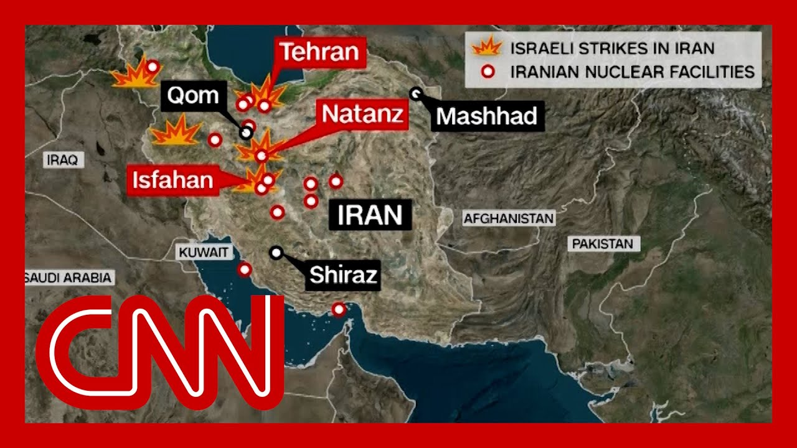

【伊朗：任何为以色列提供防御的国家，其基地都将成打击目标】
Summary: The situation between Israel and Iran has escalated into a night of strikes and counterstrikes, with Iran threatening to attack regional bases of countries supporting Israel. Air raid sirens sounded in Jerusalem and Tel Aviv, while Tehran activated air defenses. Israel's Prime Minister Benjamin Netanyahu vowed further action after Iranian missile strikes were largely intercepted. Israel's earlier strike targeted Iranian nuclear facilities and military leaders, reportedly killing several top commanders and scientists. The U.S. has warned Iran against attacking its regional assets, while President Trump commented on stalled nuclear talks.
摘要： 以色列和伊朗之间的局势升级为相互打击的一夜，伊朗威胁将攻击支持以色列的国家的地区基地。耶路撒冷和特拉维夫响起空袭警报，德黑兰启动防空系统。以色列总理内塔尼亚胡在伊朗导弹袭击被拦截后誓言采取进一步行动。以色列早前的袭击针对伊朗核设施和军事领导人，据报道造成多名高级指挥官和科学家死亡。美国警告伊朗不要攻击其地区资产，特朗普总统则对陷入僵局的核谈判发表了评论。

⏱️ Estimated Reading Time: 17 min
📚 六级生词 📚 雅思生词 📚 托福生词 📚 专八生词 📚 SAT生词 📚 考研生词 📚 GRE生词 📚 高考生词
It is deep into the overnight hours in Israel and Iran, well into a night of more strike and counter strikes by each on t.
以色列和伊朗已进入深夜，双方持续进行多轮打击和反击。
And just moments ago, a senior Iranian official threatened to target the regional bases of any country that defends Israel, which, of course, the United States alr.
就在刚才，一名伊朗高级官员威胁将打击任何为以色列提供防御的国家的地区基地，当然包括美国。
In just the last several hours, raid sirens have sounded in Jeru and Tel Aviv, and reportedly in the southern I city of a lot, followed a short time ago by the all clear seen as Jordan Lieberman was on in the middle of it.
过去几小时内，耶路撒冷和特拉维夫响起空袭警报，据报道南部城市也受到影响，不久后警报解除，乔丹·利伯曼当时正在现场。
And we just saw launch right behind us.
我们刚刚目睹后方有导弹发射。
In Iran, air defenses around Tehran have gone active.
伊朗德黑兰周边的防空系统已启动。
It seems like that one Iranian officials promise of a dark night ahead fo is coming to pass.
似乎伊朗官员所预言的“黑暗之夜”正在成为现实。
Or at least a tense and difficul as is this from Israelis.
至少对以色列人来说，这是一个紧张而艰难的夜晚。
Israel's prime minister. More is on the way.
以色列总理表示，更多行动即将到来。
The regime doesn't know what hit They don't know what will hit th.
该政权不知道是什么打击了他们，也不知道接下来会遭遇什么。
Benjamin Netanyahu leveled that in the middle of earlier missile strikes by Iran on Tel Aviv, Jerusalem and elsewher.
内塔尼亚胡在伊朗对特拉维夫、耶路撒冷等地的导弹袭击中发表了这番言论。
Much of it was blunted by Israel and American air defenses, all of which followed Israel's audacious strike on Iranian nuclear target.
大部分袭击被以色列和美国的防空系统拦截，此前以色列大胆打击了伊朗核目标。
Nuclear scientists and some of the country's top military commanders overnigh involving some 200 jets and hitting more than 100 target so far, according to the IDF.
据以色列国防军称，行动涉及约200架战机，袭击了100多个目标，造成核科学家和多名高级军事指挥官死亡。
Now some of it was carried out, according to Israeli intelligenc from a drone base set up inside which is a remarkable feat given the repressive surveillanc Iran has long been.
以色列情报显示，部分行动由内部无人机基地执行，这在伊朗长期高压监控下堪称壮举。
Now, what you're seeing is a mos of some of that activity.
现在您看到的是部分行动的影像。
The operation was designed, they say, to take out air defens and hit air bases before Iranians could shoot down Israeli Air Force planes or scramble interceptors.
据称，行动旨在摧毁防空系统并打击空军基地，以防伊朗击落以色列战机或出动拦截机。
However, it was accomplished. The first strike decapitated Iran's military leadership.
然而行动成功，首轮打击重创伊朗军事领导层。
Of these four top military leade the commander of the elite Islamic Revolutionary Guard Corp the head of the Armed Forces General Staff, the Revolutionary Guards Aerospace Forces chief.
其中包括伊斯兰革命卫队精锐部队指挥官、武装部队总参谋长、革命卫队航空航天部队负责人等四名高级将领。
Iran also says six top nuclear scientists were kill including the man you see here who once led Iran's Atomic Energy Organization.
伊朗还称六名顶级核科学家死亡，包括图中这位曾领导伊朗原子能组织的人。
As for the nuclear facilities targeted, Iran is minimizing the damage done.
对于遭袭的核设施，伊朗淡化了损失程度。
However, the head of the International Atomic Ener Agency told the U.N. Security Council today that Israel managed to destroy the above ground uranium enrichment plant in Nata and says is wrong.
但国际原子能机构负责人今日向联合国安理会表示，以色列摧毁了纳坦兹的地面铀浓缩设施，并称伊朗的说法不实。
Iranian authorities have notified the IAEA that faci at Fordo and its Farhan were als.
伊朗当局已通知国际原子能机构，福尔多和法尔汉的设施也遭袭。
Now, earlier today, President Trump weighed in with two social media postings on the as yet unproductive U.S. Iranian nuclear talks.
今日早些时候，特朗普总统就陷入僵局的美伊核谈判发表了两篇社媒帖文。
In a post that also offers Iran an off ramp if they make a.
其中一篇为伊朗提供了达成协议的“出路”。
Quoting now from the president. Two months ago I gave Iran a 60 day ultimatum to make a deal. They should have done it. Today's day 61. I told them what to do, but they just couldn't get there.
引用总统原话：“两月前我给伊朗60天最后通牒，他们本该接受。今天是第61天，我告知了要求，但他们未能达成。”
Now they have perhaps a second c.
现在他们或许还有第二次机会。
Another post an hour earlier was darker with the president warning, quot Iran must make a deal before there is nothing left.
另一篇更严厉的帖文警告称：“伊朗必须在一切消失前达成协议。”
Joining me right now, a senior Jerusalem bureau chief or an Lieberman or what do you seeing hearing at th.
此刻与我连线的是耶路撒冷分社资深记者利伯曼，您在现场有何见闻？
What's the latest you're. Well, Anderson, it's worth point that this is pretty much the 24 from where this all started during your sho yesterday, as we hopped on air at the beginning of the first wave of Israeli str.
最新情况如何？安德森，值得注意的是，这几乎是24小时前您节目开始时以色列首轮袭击的延续。
That has very much continued, according to Iranian state media, with more strikes in and around Tehran occurring just a short time ago.
据伊朗官方媒体，袭击持续进行，不久前德黑兰及周边再遭打击。
Meanwhile, we have seen just a short time ago from this very spot, a third wave of incoming Iranian ballistic missiles that once again essentially set off red alerts across the country and once again forced many Israelis, many citiz into bomb shelters.
与此同时，我们刚刚在此处目睹第三波伊朗弹道导弹来袭，全国再度拉响红色警报，民众被迫躲入防空洞。
Here we even saw interceptors launched right behind us, saw what appeared to be intercep and certainly heard, perhaps ten, a dozen or maybe even more intercepts in the skies behind us.
我们甚至看到拦截导弹从身后发射，听到后方天空约十多次拦截爆炸声。
Those incredibly loud, thunderous booms can be heard fo miles saw falling shrapnel with both Israel and Iran essentially promising one anothe and vowing to the wider world that this isn't over yet.
雷鸣般的爆炸声数英里外可闻，弹片四溅，以伊双方相互警告并向世界宣称冲突尚未结束。
Perhaps it is just beginning her as we see more strikes from Israel carried out in Iran and Iran, promising to carry out more ballistic missile launches against Israel, we saw that begin with drone attacks much earlier in the day, but now are on promising there will be more, ballistic missile strikes to, to to to make sure that Israelis don't have a quiet night.
或许这只是开始——以色列对伊朗发动更多打击，伊朗则誓言继续向以发射弹道导弹。冲突始于白天的无人机袭击，但伊朗扬言将以更多导弹袭击确保以色列人无眠之夜。
And that's very much what we have seen playing out over the course of the past several hours here.
这正是过去几小时我们目睹的局势。
According to Israel's emergency responders, seven injured in the latest round of Iranian attacks.
据以色列应急部门，最新一轮伊朗袭击造成7人受伤。
But again, Anderson, this could well just be the beginning.
但安德森，这很可能只是开端。
Even if it's not ground troops f it is very much an air war here.
即使未出动地面部队，这也是一场激烈的空战。
And I just want to be clear, because we're showing video from earlier today, when was the last time there was incoming from Iran to Israel hitting, they're taken out by Iron Dome or actually, hitting on the ground, whether it be Jerusalem or Tel Aviv or elsewhere.
需要澄清的是，我们正在播放今日早前画面——上一次伊朗导弹突破“铁穹”或击中耶路撒冷、特拉维夫等地是什么时候？
I think it was just about an hou and a half ago.
我认为约一个半小时前。
It is 305 local time here. It was right around 115 local time, maybe a little after.
当地现时间3:05，袭击发生在约1:15左右。
That red alarm and red alert sirens went off, not only in Jerusalem, but we can hear them throughout the surrounding area.
红色警报不仅在耶路撒冷响起，周边地区也能听到。
And we saw interceptors fired off behind us and saw incoming as well.
我们看到拦截导弹从身后发射，也目睹了来袭导弹。
We mentioned the threat from Ira to target regional assets belonging to any countries that help Israel.
我们提到伊朗威胁打击任何援助以色列国家的地区资产。
interesting, because last night, the initial statement from Secretary of State Marco Rubio, which was the first statement we heard from the administration, was essentially pointing out that the US is it was not aware of this, not, not involved in it.
耐人寻味的是，昨晚国务卿马可·卢比奥的初始声明称美国“不知情且未参与”。
clearly that posture seems to to have changed.
显然这一立场已有所改变。
Now, what more do you know about what the threat is coming from Iran right now about hitting other, regional pa.
关于伊朗当前针对其他地区伙伴的威胁，您还掌握哪些信息？
Well, the US statement was, was it seemed very carefully worded that the U.S. had not taken part in the offensive side of this.
美方声明措辞谨慎，称未参与进攻行动。
Israel was acting on its own. But we know, having talked to U. officials, that that the U.S. was very much helping Israel on the defensive side once there was incoming.
以色列独自行动，但我们从美官员处获悉，美国在防御方面为以提供了大量支援。
There are U.S. fed batteries. Also, U.S. Patriot missiles stationed across the region.
美军在该地区部署了“爱国者”导弹等防空系统。
And it seems some of that helped intercept the incoming Iranian ballistic m.
似乎部分系统协助拦截了来袭的伊朗弹道导弹。
So it seems that's where the Iranian threat is poin.
因此伊朗的威胁似乎正指向此。
Yes, there are other countries that make up what U.S. Central Command created, which is a network of detection and interception.
美国中央司令部建立的探测拦截网络中还有其他国家参与。
Other countries take part in that as well, not just the U.S. and Israel, some of the Arab states, too, but it doesn't seem like that's where Iran is really pointing th.
不仅美以，部分阿拉伯国家也参与其中，但伊朗的矛头似乎不在此处。
It seems like Iran is threatenin bases in the region.
伊朗似乎威胁要打击该地区的军事基地。
And of course, there are significant bases. fifth Fleet is based in Bahrain. Air Force Central Command is based in Qata.
重要基地包括驻巴林的第五舰队和驻卡塔尔的空军中央司令部。
And then there are U.S. forces in Iraq and Syria that have come under fire from Iran backed proxies there.
此外，驻伊拉克和叙利亚的美军也曾遭伊朗支持的代理人袭击。
It seems that's where Iran is pointing this thre.
这似乎是伊朗的威胁所指。
The U.S. has already threatened back, essentially, and said if Iran attacks U.S. forces, then the threat of U.S. getting involved becomes a very real possibility.
美国已反威胁称，若伊朗攻击美军，美方介入的可能性将大幅上升。
So that's what's what we're watching as this develops past the 24 hour mark hour.
这就是我们关注的24小时后的局势发展。
And we'll continue to check in with you throughout this hour.
本时段我们将持续为您更新。
Joining me right now, CNN chief White House correspondent, anchor of The Sou Kaitlan Collins.
现在连线CNN白宫首席记者、《来源》主播凯特兰·柯林斯。
Kate, what are you hearing from from white House officials?
凯特，白宫官员有何最新消息？
Well, what Oren just laid out there is a key part of this that they are very closely watching at the white House, which is whether or not Iran doe go after U.S. personnel or U.S. interest inside the region, and whether or not that does pull the U.S. further inside of this.
欧伦所述正是白宫密切关注的焦点：伊朗是否袭击美军人员或地区利益，以及这是否会导致美国更深介入。
It's actually a debate that has kind of been roiling President Trump's world today, the world today, at least some people who do not want to see the U.S. get more involved in this, while others are saying that the United States should be there to assist Israel as it defends itself from Iran.
这实际引发了特朗普团队的争论——部分人反对美国进一步卷入，另一派则认为应协助以色列防御伊朗。
The question is whether or not that goes further than this.
问题在于局势会否进一步升级。
And Anderson, we did hear from President Trump praising these strikes as excell from Israel on Iran last night, even though just hours before he had publicly been sayi he did not want to see Israel st because he was worried that it would derail those diplomatic talks that have been happening, those talks about a nuclear deal between the United States and Ir.
值得注意的是，特朗普总统昨夜称赞以色列对伊打击“出色”，尽管几小时前他还公开反对，担心这会破坏美伊核谈判。
There's supposed to be another m on Sunday about that.
原定周日将举行新一轮谈判。
And we still haven't gotten really a clear answer as to whether or not that is still going to go forwar.
目前尚不清楚会谈是否照常进行。
The president, you know, was not in front of cameras toda.
总统今日未公开露面。
He spent most of it basically on the phone and in me with advisers behind closed door.
他多数时间在与顾问进行闭门会议和通话。
Today, he convened his national securit inside the situation Room for for well over an hour earlie.
今早他在战情室召开国安会议逾一小时。
And, you know, I was in the halls of the West W.
我在西翼走廊看到...
I saw his Middle East envoy, Steve Wyckoff, going from meeting to meeting.
其中东特使史蒂夫·威科夫频繁出入会议室。
And so obviously, there's been a lot of activity happening at the white House as they have been watching this.
显然白宫正高度关注此事并频繁磋商。
But it is a notable turn to see the president praising this strike so much and just how far ranging it was after very publicly, he had been signaling that Israel should not take this step as he wanted to try to to achieve a deal first.
值得注意的转折是，总统在公开反对以色列行动后，又高度赞扬了这次大规模打击。
And so we'll see, of course, what is the next step here and what's going to happen, as I should note, you know, just in the context of all of th.
我们将关注后续发展，尤其值得注意的是...
is preparing to go to Canada on Sunday night.
总统拟于周日晚赴加拿大。
He's meeting with world leaders at a summit there.
他将在峰会上会见多国领导人。
this will be a key issue and how this develops over the next few days.
这将成为未来几日关键议题。
Yeah. Kaitlan Collins, thanks very muc.
谢谢凯特兰·柯林斯。
Joining me now as seen in global affairs analyst Brett McGurk.
现在连线全球事务分析师布雷特·麦格克。
He's a former Middle East and North Africa coordinato for the National Security Counci.
他曾任国安会中东和北非事务协调员。
Also senior national security analyst, former deputy director of National Intelligence Beth-Ce.
还有前国家情报副总监、高级国安分析师贝丝·桑纳。
CNN, political and foreign polic analyst Barack Rabid and CNN Jerusalem correspondent Jeremy Diamond.
CNN政治与外交政策分析师巴拉克·拉比德及耶路撒冷记者杰里米·戴蒙德。
Barack, what do you make of the that Israel has hit so far that we know about both t the facilities that they have chosen to strike and also the ones that they have and the targeting of scientists, military, top military commander.
巴拉克，你如何看待以色列已知的打击目标——包括设施选择及对科学家、高级将领的针对性行动？
Good evening. And listen, I think, what we can clearly from the last 24 hours is that Iran has taken a hit.
晚上好。过去24小时明显可见伊朗遭受重创。
It has taken a big hit, mainly because Israel strikes are, very, pinpointed.
主要因为以色列打击极其精准。
It's based on, precision.
这是基于精确性。
And that's why it really hurt the Iranians, because Israel had the list of 2 top military commanders and nuclear scientists.
这就是为什么这对伊朗人打击很大，因为以色列掌握了2名高级军事指挥官和核科学家的名单。
I think at least 80% of those were eliminated.
我认为其中至少80%的人被消灭了。
But it's not just that they like It's not just that they had the They also had their locations.
但这不仅仅是他们掌握了名单，他们还掌握了他们的位置。
Any I mean, they must have had the most up to date look, you know, location.
我的意思是，他们肯定掌握了最新的位置信息。
They must have had eyes on these people in one way or an It's extraordinary.
他们肯定以某种方式监视着这些人，这非常不寻常。
I mean, one of these guys is exactly the guy they tried to kill back in 2010 with this sticky bomb on his car.
我的意思是，其中一个人正是他们在2010年试图用汽车粘性炸弹暗杀的目标。